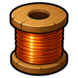

Bronze Thread
Resource · Tier 1
| Property | Value |
|---|---|
| Value | 20 coins |
| Stacks | Yes |
Made by
| Recipe | Level | Needs |
|---|---|---|
| 🧵 Spin Bronze Thread | 💎 Artifice 1 |

Resource · Tier 1
| Property | Value |
|---|---|
| Value | 20 coins |
| Stacks | Yes |
| Recipe | Level | Needs |
|---|---|---|
| 🧵 Spin Bronze Thread | 💎 Artifice 1 |